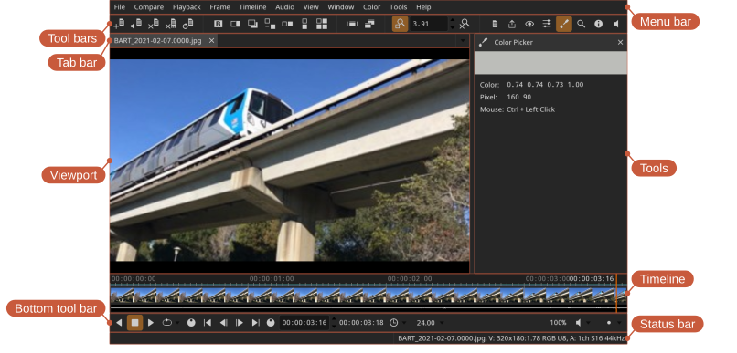

Main window

- Tab bar — switch between currently opened files
- Timeline — time scrubbing, thumbnails, and audio waveforms
- Bottom tool bar — playback, frame, and audio controls
- Tools — the currently active tool (for example, color picker or magnifier)
- Status bar — warnings, errors, information, and status indicators. Errors are also shown briefly over the image, so one is not missed while looking at the picture; warnings stay in the status bar.
Different parts of the interface can be shown or hidden from the Window menu.
Full screen
Toggle full screen mode.
Locations: Window menu, Window toolbar
Shortcut: U
Presentation mode
Presentation mode enables fullscreen and hides the user interface and HUD to show only the view.
Locations: Window menu, Window toolbar
Shortcut: Ctrl+P
Float on top
Keep the window above other applications, so a small reference view stays visible while working in something else.
Locations: Window menu
Secondary window
A secondary window can be used to mirror the view on a separate monitor — useful for client review on a calibrated display.
Locations: Window menu, Window toolbar
Shortcut: Y